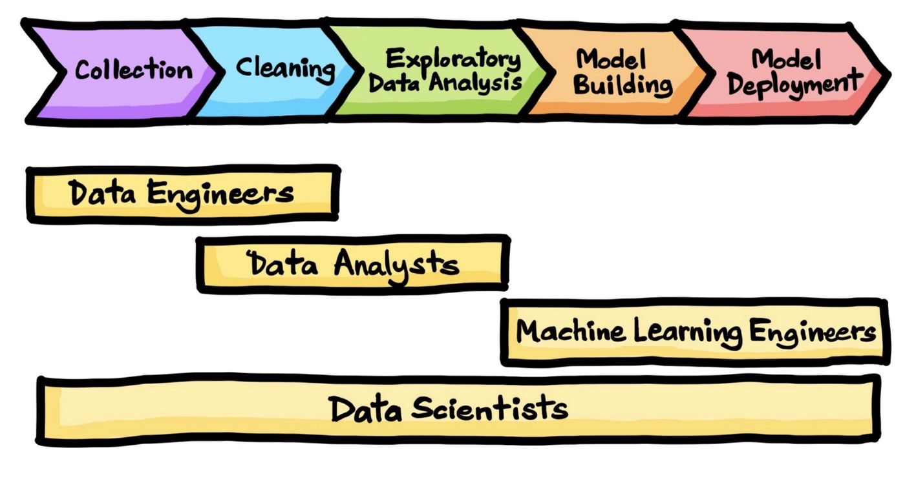
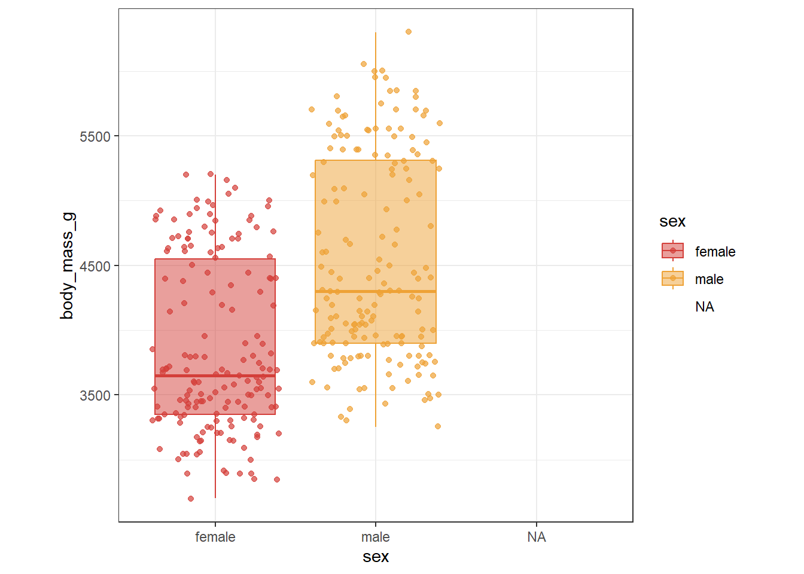

install.packages("palmerpenguins")
data(penguins, package = "palmerpenguins")
head(penguins)Introduction to Statistical Modeling
Outline
What is statistical modeling?
Observational Studies vs Planned Experiments
Data Format
Exploratory Data Analysis - why do it?
Content modified from: https://tjfisher19.github.io/introStatModeling/introductory-statistics-in-r.html#goals-of-a-statistical-analysis
Why is statistical analysis important?
The language R is our tool to facilitate investigations into data and the process of making sense of it. This is what the science of statistics is all about.
The goals of a statistical analysis typically are
to make sense of data in the face of uncertainty.
to meaningfully describe the patterns of variation in collected sample data, and use this information to make reliable inferences/generalizations about the parent population.
In many statistical problems, we are interested in describing the relationship that may exist among several different measured variables. For example, your current GPA could be impacted by how much you study. Or there may be several contributing factors – your credit hour load, your ACT score, whether or not you have a part-time job, etc.
Of course, what makes your GPA is the result of a very highly complex combination of factors, some important and others not so important.
Data science process

Data collection
What is the source of your data? How was the data collected?
Observational Studies
simply collect measurements on predictor and response variables as they naturally occur.
no intervention from the data collector.
cannot establish causal connections
e.g. the natural resources department is interested in the relationship between the water quality and the distance from the nearest power plant.
Planned Experiments
a researcher manipulates one or more variables, while holding all other variables constant
we can establish cause and effect relationships between the predictors and response
e.g. an agronomy and horticulture grad student applies different types of fertilizer to plots in a corn field and measures the height of the corn plants.
Before we introduce more statistical models we need to step back and discuss the source of our data. Are the data a “sample of convenience,” or were they obtained via a designed experiment or some random sampling scheme? How the data were collected has a crucial impact on what conclusions can be meaningfully made.
It is important to recognize that there are two primary methods for obtaining data for analysis: designed experiments and observational studies. There is a third type of data collected through survey sampling methods that incorporates elements from both designed experiments and observational studies, but we exclude it here. It is important to know the distinction because each type of data results in a different approach to interpreting estimated models.
Data cleaning
Recall tidy data format! Specify EVERYTHING (e.g. plot, treatment, pair, response, etc.)
Each variable is a column
Each observation is a row
Each type of observational unit forms a table
Experimental unit vs Sampling unit
In a planned experiment, it is important to know where your treatments were independently applied.
Example:
If you apply different fertilizers to plots in a field and measure the height of 10 corn plants from the middle rows of the plot, where are the treatments applied?
- Experimental unit - plot (fertilizer was independently applied)
- Sampling unit - corn plants (measurements were taken individually on the corn plants)
Options:
- Average your response over your sub samples (e.g. find the average height of the 10 plants)
- Account for sub-sampling in your statistical model.
Do not treat each sub-sample as an independent unit in your analysis.
Exploratory Data Analysis (EDA)
Typically referred to looking at descriptive statistics. EDA should be performed prior to a formal analysis (“look at your data first!”)
Numerical summaries
means, medians, standard deviation
quantiles, five-number summaries
correlations
Graphical Summaries + One variable: boxplots, histograms, density plots, etc.
Two variables: scatterplots, side-by-side boxplots, overlaid density plots
Many variables: scatterplot matrices, interactive graphics, faceting
Remember, what you put into your statistical model, you get out of your statistical model. Data quality is important!
descriptive statistics in Intro Statistics books. This is an important step that should always be performed prior to a formal analysis. It looks simple but it is vital to conducting a meaningful analysis. EDA is comprised of: numerical summaries and graphical summaries
We look for outliers, data-entry errors and skewness or unusual distributions using EDA. Are the data distributed as you expect? Getting data into a form suitable for analysis by cleaning out mistakes and aberrations is often time consuming. It often takes more time than the data analysis itself! In this course, data will usually be ready to analyze but we will occasionally intermix messy data. You should realize that in practice it is rarely the case to receive clean data.
EDA Example
Recall the Palmer Penguin data set.
| species | island | bill_length_mm | bill_depth_mm | flipper_length_mm | body_mass_g | sex | year |
|---|---|---|---|---|---|---|---|
| Adelie | Torgersen | 39.1 | 18.7 | 181 | 3750 | male | 2007 |
| Adelie | Torgersen | 39.5 | 17.4 | 186 | 3800 | female | 2007 |
| Gentoo | Biscoe | 48.4 | 14.4 | 203 | 4625 | female | 2009 |
| Gentoo | Biscoe | 51.1 | 16.5 | 225 | 5250 | male | 2009 |
| Chinstrap | Dream | 50.6 | 19.4 | 193 | 3800 | male | 2007 |
| Chinstrap | Dream | 46.7 | 17.9 | 195 | 3300 | female | 2007 |
Data were collected and made available by Dr. Kristen Gorman and the Palmer Station, Antarctica LTER, a member of the Long Term Ecological Research Network.
EDA Example: Numerical summaries
penguins %>%
group_by(sex) %>%
summarize(across(c("body_mass_g"),
list(Mean = ~ mean(., na.rm = T),
SD = ~ sd(., na.rm =T),
Min = ~ min(., na.rm = T),
Median = ~ median(., na.rm = T),
Max = ~ max(., na.rm = T))))| sex | body_mass_g_Mean | body_mass_g_SD | body_mass_g_Min | body_mass_g_Median | body_mass_g_Max |
|---|---|---|---|---|---|
| female | 3862.3 | 666.2 | 2700 | 3650 | 5200 |
| male | 4545.7 | 787.6 | 3250 | 4300 | 6300 |
| NA | 4005.6 | 679.4 | 2975 | 4100 | 4875 |
Your turn: + What if you wanted to get summaries by species instead of sex? What about by both? + Can you get summaries for a different measure?
EDA Example: Graphical summaries
::: columns ::: column
penguins %>%
ggplot(aes(x = sex, y = body_mass_g, color = sex, fill = sex)) +
geom_boxplot(alpha = 0.5) +
geom_point(position = "jitter", alpha = 0.7) +
theme_bw() +
theme(aspect.ratio = 1) :::

Your turn
How would you look at the graphical summary for each species?
What type of plot would you make to compare body mass and flipper length?
Statistical Models
A statistical model is a mechanism we will use to try to describe the structural relationship between some measured outcome (called the response variable) and one or more impacting variables (called predictor variables or factors or features, depending on the contextual circumstance) in a simplified mathematical way.
\[ \text{Data} = \text{Systematic Structure} + \text{Random Variation} \]
Think of a model airplane. It is just a simplified representation of the real thing.
It is in this sense that you can think of a statistical model as a “simplification” in much the same way as the model airplane: we know that the true relationship between response and predictor variables is very detailed and complex. The goal of the model is not to capture all the intricacies of the complexity but rather, the model only seeks to describe the essential features of any relationships that exist.
In this session we will…
- Basic statistical tests
- Five step hypothesis procedure
- confidence intervals & p-values
- t-tests, chi-square tests, and simple regression
- Linear models
- One-way and two-way ANOVA
- Blocking
- Generalized Linear Models
- Poisson and binomial response variables
- Workshop time: bring your own data!
- We will have example data sets for you to practice.